Abstract
Humanoid soccer contact skills require the robot to close the loop over perception, approach, alignment, impact, and recovery while its own motion changes the viewpoint and can hide the ball. DAVIS asks whether a humanoid can learn deployable soccer contact skills from only a head-mounted depth image, proprioceptive history, and an optional low-dimensional task command, directly outputting 25-DoF joint PD targets without external scene state, runtime perception, or planning. The framework learns visibility-aware auxiliary geometry during training and combines GT-to-prediction annealing, task curricula, and AMP-style motion priors to bridge privileged supervision and deployment. We instantiate separate shooting and directional-dribbling policies, and evaluate them in IsaacLab, on the Noetix E1, and through controlled ablations.
Video
System at a glance
Depth → whole-body control
The deployed graph keeps a single 168×80 head-mounted depth frame, a five-step proprioceptive history, and an optional task variable. The actor outputs 25-DoF joint PD targets.
The head is part of the loop
The E1 has 23 body DoFs and 2 head DoFs. Learned head control changes the next depth observation and is trained jointly with locomotion and contact.
One interface, separate policies
Shooting and directional dribbling use separate checkpoints with the same depth-to-control interface; new skills change task objects, commands, rewards, and curricula.
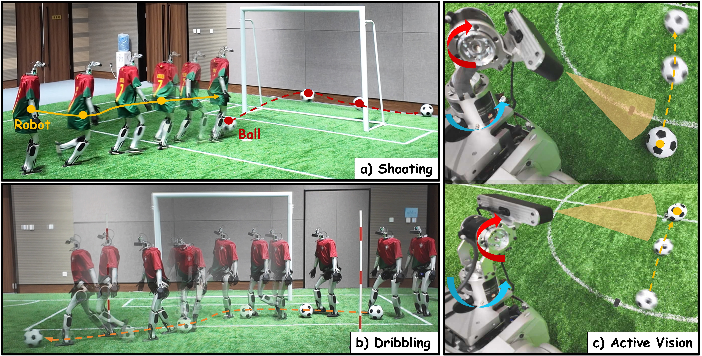
Method
A single depth stream, proprioceptive history, and task command drive a structured policy. Geometry and visibility are learned during training, then the exported actor runs directly on the robot.
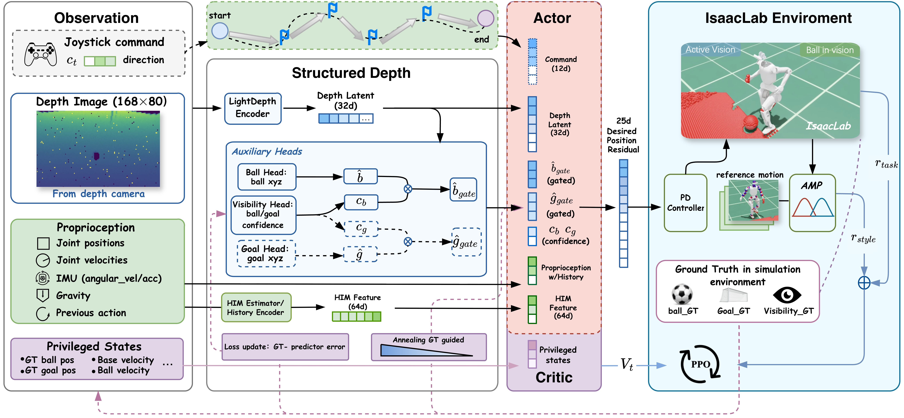
Simulation → camera
Both simulated and real depth are cropped to 168×80, clipped to 0.3–5.0 m, normalized, and zero-filled at invalid pixels.
Geometry × visibility
Ball and goal geometry are confidence-gated before entering the actor; privileged labels supervise the auxiliary heads during training.
Isaac Lab → E1
Policies train for 20,000 PPO iterations, export to ONNX, and run at 50 Hz with a 200 Hz PD loop and 15 Hz depth stream.
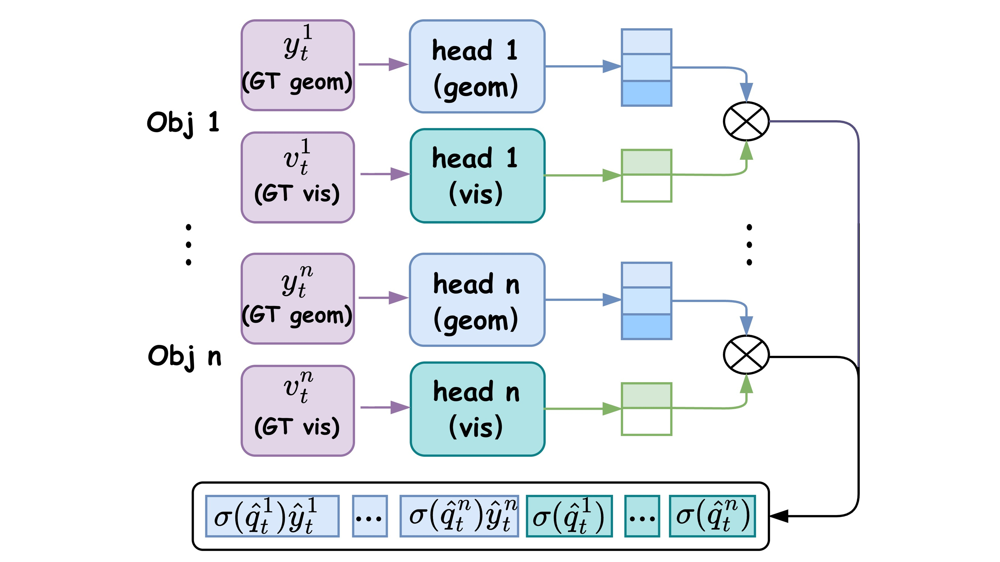
Task instantiations
Goal-directed shooting
Separate shooting checkpoints handle penalty and free kicks from randomized positions. The actor receives no operator command and learns one-shot approach, alignment, and contact.
Directional dribbling
A separate checkpoint receives only a joystick direction and learns repeated contacts for target reaching, obstacle traversal, and repeated-S slalom tasks.
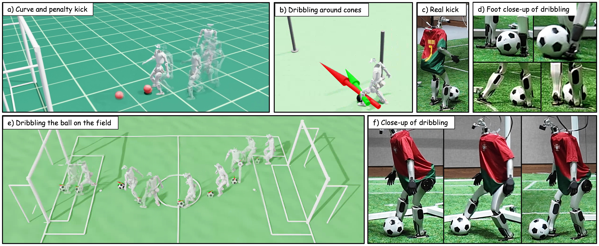
Results
Robot trials
Shooting records 26/38, 28/49, and 33/60 successes for Easy, Medium, and Hard settings. Dribbling records 22/28, 19/28, and 17/28 for target reaching, obstacle traversal, and slalom.
A success requires one-kick goal-line crossing for shooting, and an upright robot with both robot and ball within 1 m of the target for dribbling.
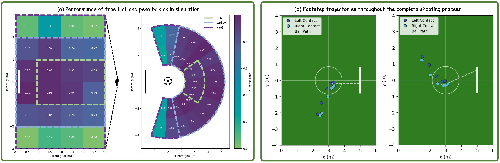
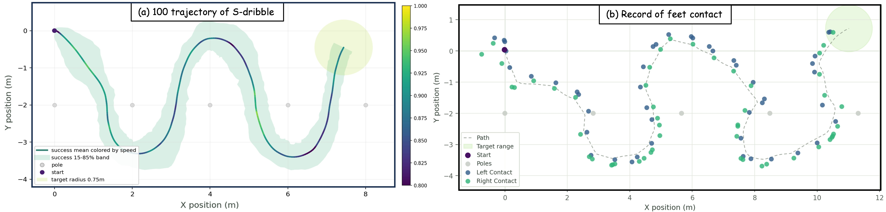
| Simulation task | Easy / N=3 | Medium / N=5 | Hard / N=7 | Total / mean |
|---|---|---|---|---|
| Penalty kick | 94.80% | 95.80% | 55.50% | 84.87% |
| Free kick | 100.00% | 88.00% | 71.00% | 85.36% |
| Repeated-S slalom | 0.71–0.77 | 0.55–0.72 | 0.43–0.68 | 0.65 over 900 trials |
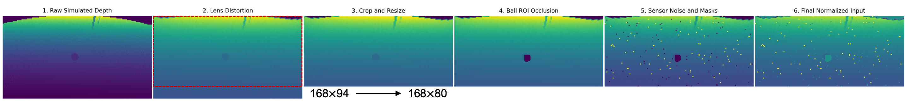
What the ablations show
The full DAVIS model gives the best overall balance. Removing the auxiliary head drives success to zero; removing curriculum, annealing, geometry, supervision, visibility gating, or active vision degrades one or more shooting and dribbling metrics.
External protocol
At 1 m tolerance, DAVIS reaches 0.88 target-reaching and 0.96 obstacle-avoidance success over 50 trials per condition, compared with reported Dribble Master rates of 0.87 and 0.93.
Ablations and protocol comparison
| Variant | Penalty SR | Free-kick SR | Slalom SR | Slalom Evel | Slalom Rbib |
|---|---|---|---|---|---|
| DAVIS | 0.84 | 0.80 | 0.70 | 0.79 | 0.74 |
| Without curriculum | 0.62 | 0.55 | 0.51 | 0.77 | 0.69 |
| Without geometry | 0.20 | 0.15 | 0.34 | 0.91 | 0.54 |
| Without auxiliary head | 0.00 | 0.00 | 0.00 | 1.45 | 0.05 |
| Without active vision | 0.00 | 0.36 | 0.00 | 1.25 | 0.03 |
| Dribble Master reproduction | Distance / command | RR1.0 | Trials |
|---|---|---|---|
| Target reaching | 3 m | 0.88 [0.76, 0.94] | 50 simulation rounds |
| Target reaching | 5 m | 0.84 [0.71, 0.92] | 50 simulation rounds |
| Target reaching | 8 m | 0.80 [0.67, 0.89] | 50 simulation rounds |
| Single obstacle | 5 m | 0.96 [0.87, 0.99] | 50 simulation rounds |
| Published reference | Real robot, distance unreported | 0.87 reach / 0.93 obstacle | 15 trials per task |
The DAVIS reproduction is simulation-based; the published Dribble Master reaching and obstacle values are real-robot reference results. They are shown together because the appendix uses the same external protocol, not as a matched hardware comparison.
Limitations and future work
Residual perception gap
The compact depth-only interface remains tied to one head-mounted camera and inherits occlusion, dropout, and imperfectly simulated depth. Better sensor-noise modeling and real-world fine-tuning are practical next steps.
Manual skill construction
The shared interface still requires hand-tuned rewards, curricula, and contact conditioning for every skill. Language-conditioned task specifications and automatic curricula could make new behavior construction less manual.
Technical supplement
Deployment, evaluation, optimization, and sim-to-real settings for the DAVIS experiments.
A. Robot system and deployment interface
Isaac Lab on Isaac Sim 5.0.0; eight RTX 4090D GPUs; 20,000 PPO iterations before ONNX export. The 25-D action vector is unchanged from training to deployment. Runtime input is one aligned 168×80 depth frame, five-step proprioceptive history, and an optional low-dimensional command. The policy runs at 50 Hz, the PD loop at 200 Hz, and the depth stream at 15 Hz.
| Depth | 0.3–5.0 m, normalized as 2D/5.0−1, invalid pixels zero-filled |
|---|---|
| Action | 25-DoF joint position residual / PD target |
| Training | Isaac Lab / Isaac Sim 5.0.0; 8× RTX 4090D; 20,000 PPO iterations |
B. Evaluation protocols and metrics
Shooting succeeds when the ball crosses the goal line in one kick. Dribbling succeeds when the robot stays upright and both robot and ball finish within 1 m of the target; simulated slalom also requires ordered waypoint visits. The repeated-S fixture uses N∈{3,5,7}, α∈{60°,90°,120°}, 2N+3 waypoints, 0.75 m arrival radius, 5 s segment timers, and 900 trials.
| Metric | Definition |
|---|---|
| SR | Task-level success rate |
| rcontact | Valid foot–ball contact followed by goal-directed exit |
| Eang | Body-heading error relative to the robot-to-goal direction |
| Evel | Mean commanded-versus-measured ball-velocity error |
| Rbib | Engaged time inside the controllable ball band |
| RRτ | Rounds with minimum ball–goal distance below τ |
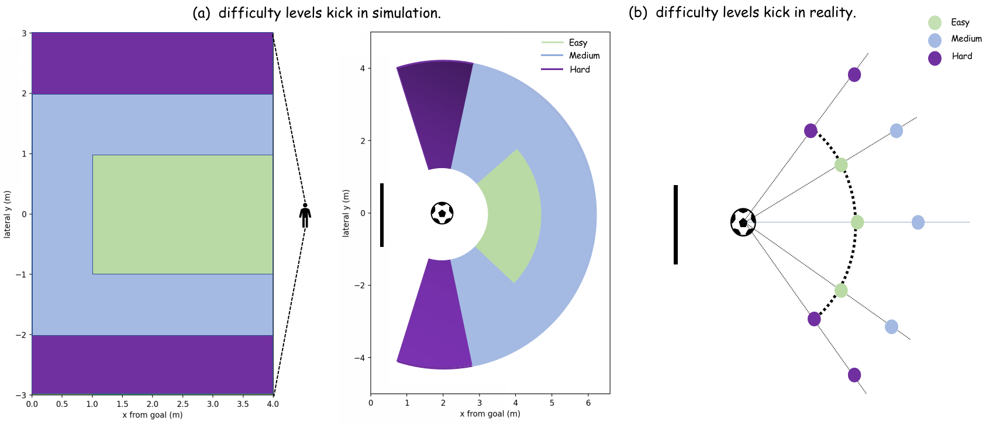
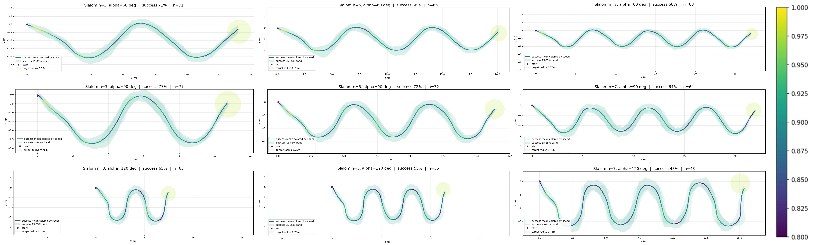
C. Observation, optimization, and auxiliary supervision
Shooting uses 81-D proprioception and dribbling 84-D. A LightDepthEncoder maps the depth frame to a 32-D latent; actor and critic MLPs use [512,256,128] ELU layers with normalization, and HIM produces a 3-D hidden-state estimate. The critic receives privileged velocity, contact, terrain, object geometry, labels, and curriculum variables during training only.
| Auxiliary heads | Ball 3-D geometry, goal 3-D geometry, two visibility logits |
|---|---|
| PPO | 24-step rollouts; 5 epochs; 4 mini-batches; lr 1×10−3; γ=.99; λ=.95; clip=.2 |
| AMP-HIM | Wasserstein discriminator; lr 5×10−6; replay 200,000; coefficient .8 |
| Annealing | Concave √ ramp from ground-truth geometry to predictions; frozen when auxiliary EMA is too high |
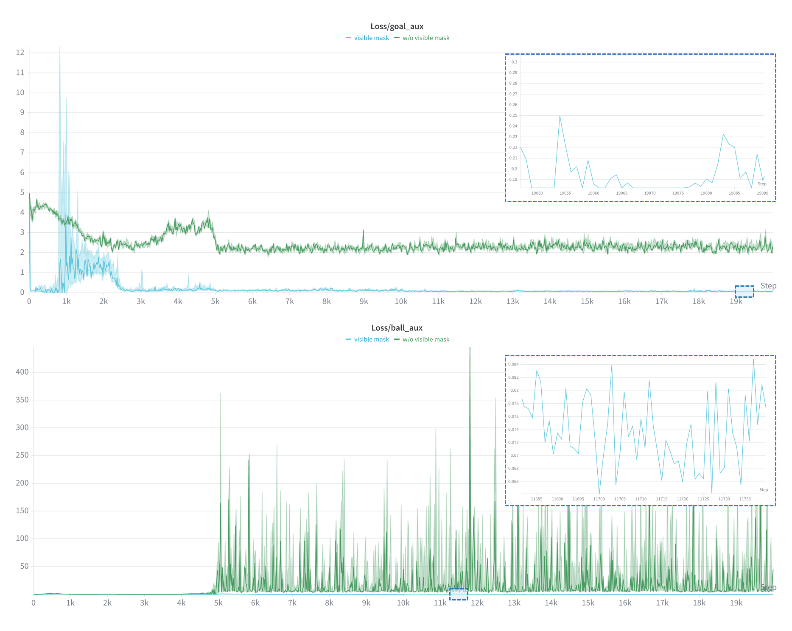
D. Task definitions and reward details
Goal-directed shooting
1,024 parallel environments, 20 s episodes, 0.005 s physics step. Reward weights cover approach/chase (3.0, 2.0), active vision (3.0, −0.5, 2.0), ball–goal alignment (1.0, 1.0, 1.5), ball motion (2.0, 4.0, 1.5), one-shot score 10.0, safety/style terms, and AMP coefficient .8.
Directional dribbling
12-way command ring; 60 s episode; 0.42 m target distance; band half-width 0.15→0.10 m; speed range 0.20–1.50 m/s; final out-of-band dwell 3.5 s. Reward groups are progress/heading (5.0, .4), dense re-approach (2.0), out-of-band (−1.0), active vision (1.0, .6), safety/termination, and head-masked AMP (.8, interpolation .8).
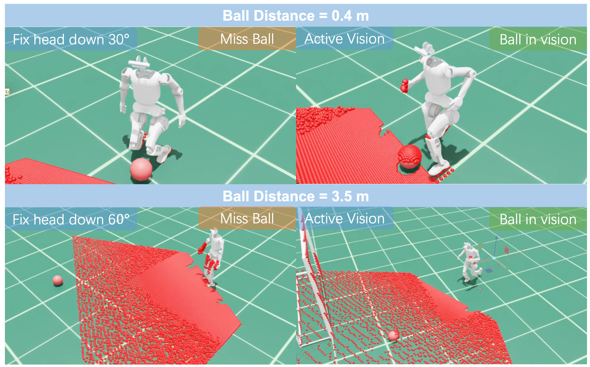
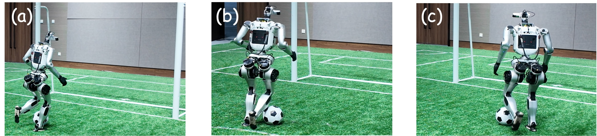
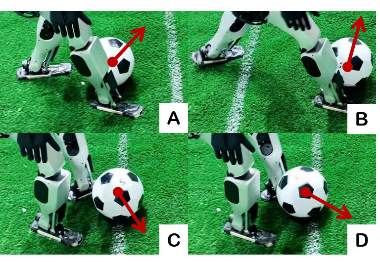
E. Domain randomization and sim-to-real
The simulated 168×94 ZED2i pinhole image is cropped to the deployed 168×80 interface. Training randomizes depth noise, stripe and rectangular dropout, ball-region occlusion, camera intrinsics/pose, joint offsets, base COM and mass, actuator scales, ball mass, external pushes, and contact dynamics.
| Depth | Distance noise .01; Gaussian coefficient .005; salt-and-pepper .01 |
|---|---|
| Camera | Intrinsics ±.3–.5 px; translation .02–.04 m; rotation .025–.060 rad |
| Robot | Joint offset ±.02 rad; COM ±.05 m; mass ±5 kg; actuator scale .8–1.2 |
| Ball / pushes | 0.36–0.56 kg; 3–15 s interval; linear and angular velocity disturbances |
F. Additional skills and results
The same actor interface is tested with a close-range powerful shot, obstacle-aware dribbling, and recovery after ball loss. Powerful shot changes reset, reward, and AMP schedules only. Obstacle-aware dribbling adds an indexed obstacle geometry/visibility head and artificial-potential-field command deflection; no runtime obstacle controller is added. Ball-loss recovery uses visibility and an invisible-ball timer: search penalty starts after 0.5 s, while active head and body-following rewards reacquire the ball.
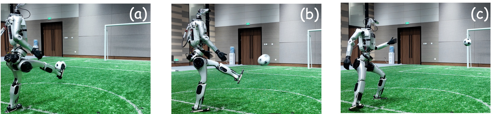
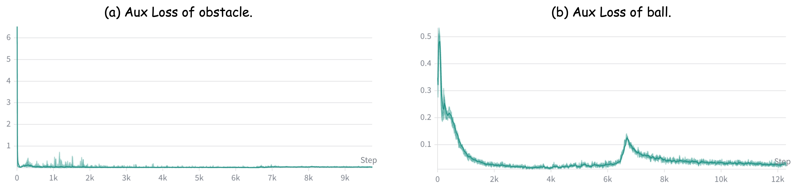
BibTeX
@inproceedings{davis2027,
title={DAVIS: A Depth-Only End-to-End Active-Vision Framework for Humanoid Soccer Skills},
booktitle={IEEE International Conference on Robotics and Automation},
year={2027}
}